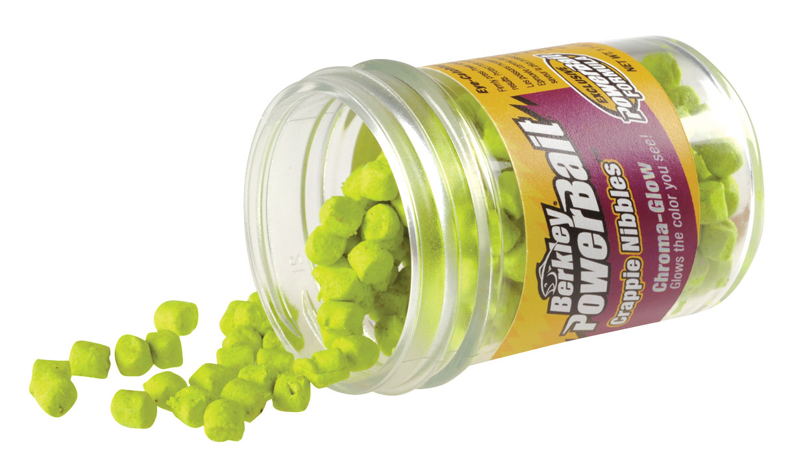
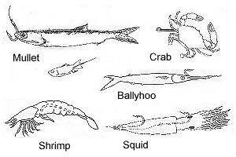

Bait
With all the different kinds of bait out there today, you should know which bait to use. Bait ranges anywhere from powerbait, lures, and live bait. the type of bait is dependant on what kind of fish you are trying to catching.
Powerbait is a great way to catch all kinds of fish. The only reason I have ever bought Powerbait was to catch trout though. Never had much luck with any other type of fish. It is like Playdoh you take a ball of it and put it on your hook. Then you are good to go.
My preference is to catch either bass or trout. When I use a lure called the shadrapp, it doesn't fail. Lures are another type of bait that you can use. They are fake bait that mimic other types of live bait, and fish go crazy for lures. The type of lure also requires you to know what type of fish you are fishing for. The shadrapp was specifically made for bass, it was through my experience I found that it works for trout as well
Live bait is the last kind of bait, such as worms, shad, squid(for saltwater), shrimp(saltwater), etc. My experience is limited to fishing the saltwaters shoreline of florida, where I fished for shark mainly. I remember cutting the tails off fish to chum the water. Chum is just a way to lure sharks closer to the shore.
You can use any of these types of bait. For better success at fishing I recommend to research the spot where you are fishing to see what works.Click here to find out more information on bait.